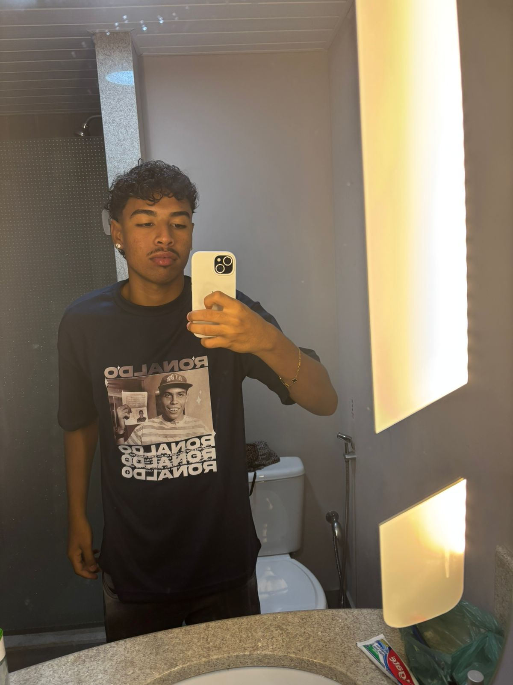

Sobre

-
Me chamo Kauan, tenho 20 anos e atualmente estou no
3º semestre do curso de Ciência da Computação.
-
Ingressei na área de tecnologia em 2021, onde iniciei
o ensino médio junto com o técnico em informática,
com isso decidi dar continuidade na área de tecnologia.
-
Meus hobbies incluem jogar futebol, treinar jiu-jitsu e ouvir música nos momentos livres.
Também gosto de acompanhar diferentes estilos musicais, passar tempo com a família e aproveitar atividades que ajudam
a manter o foco,
a disciplina e o bem-estar.